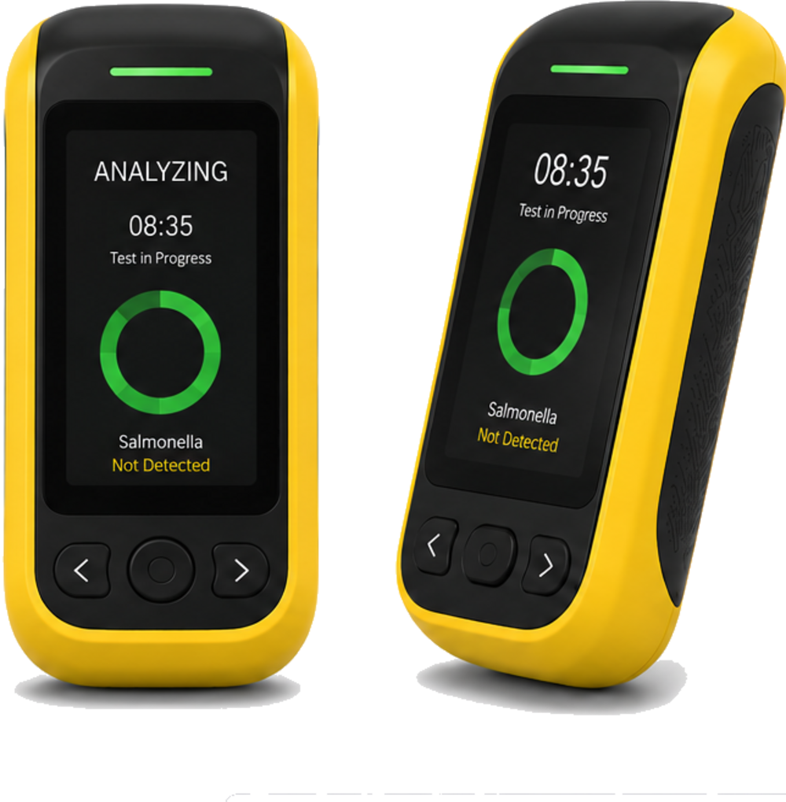
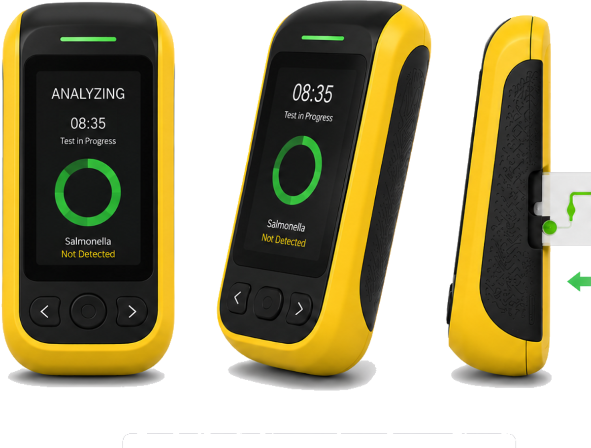

10-minute bacterial pathogen detection for food safety
A portable, handheld system that delivers PCR-like accuracy in about ten minutes — no lab, no amplification step, no specialized technician.
Detecting E. coli, Salmonella, Listeria & Campylobacter — ~80% of the market

Slow testing puts consumers at risk and holds up product
Bacterial contamination sickens an estimated 600 million people a year and drives costly recalls. Today's screening takes hours and confirmation takes days, so product sits in inventory or ships untested — costing the food industry over $100 million annually.
E. coli, Salmonella, Listeria and Campylobacter cause illness worldwide and trigger recalls.
Fast screening takes hours; confirmatory testing takes days while product waits.
Suppliers hold $1M+ of inventory every day awaiting pathogen test results.
Lab-grade answers, right at the point of need
The RapidBio System is a portable, handheld analyzer that identifies bacterial pathogens directly from food samples — using patented particle immunoagglutination and Mie-scattering detection.
- ~10 minutes to resultFast screening in minutes, not hours or days.
- Portable & handheldTest anywhere across the distribution ecosystem.
- PCR-like accuracyNo sample amplification step required.

Every test builds a real-time food-safety data layer
Each test generates structured, timestamped, geotagged data — creating a pathogen dataset that doesn't exist today and shifting food safety from reactive to predictive. The long-term moat isn't the device; it's the data.
Real-time capture
Every result is uploaded to cloud QA, building a live, geotagged record of pathogen data at scale.
Predictive modeling
Correlating results with supplier, line, temperature and season enables preventive, not reactive, food safety.
Network intelligence
Dense, geotagged results compress outbreak tracing from weeks to hours and enable supplier risk scoring.
Interested in the opportunity?
We're raising a seed round to complete development, achieve certification, and bring the first rapid pathogen test to market. Request the deck or start a conversation.
Request the deck